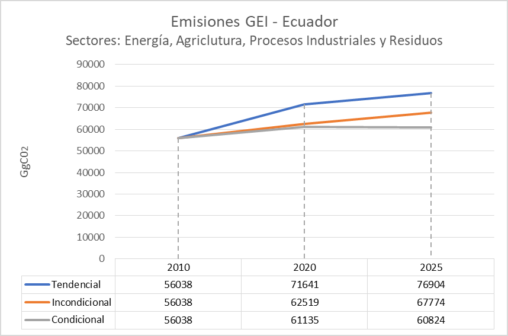
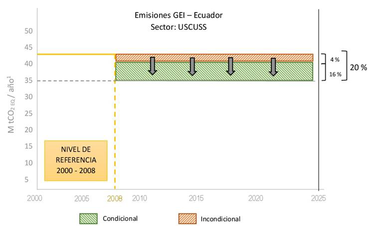

REPUBLIC OF ECUADOR
FIRST CONTRIBUTION DETERMINED AT THE NATIONAL LEVEL FOR THE PARIS AGREEMENT UNDER THE UNITED NATIONS FRAMEWORK CONVENTION ON CLIMATE CHANGE
MARCH, 2019
GLOSSARY OF ACRONYMS
| Acronym | Description |
|---|---|
| AME | Association of Ecuadorian Municipalities |
| CICC | Interinstitutional Committee on Climate Change |
| UNFCCC | United Nations Framework Convention on Climate Change |
| COA | Organic Code of the Environment |
| COA | Organic Code of the Environment |
| CONGOPE | Consortium of Provincial Governments of Ecuador |
| COPFP | Organic Code of Planning and Public Finance |
| NTVC | Volatile Non-Methane Organic Compounds |
| DA | Activity Data |
| ENCC | National Climate Change Strategy |
| ENSO | The Child-Southern Oscillation |
| ESCOs | Energy Management Companies |
| ESPAC | Survey of Surface and Continuous Agricultural Production |
| FAOSTAT | Corporate Statistical Database of the Food and Agriculture Organization of the United Nations |
| GACMO | Cost of abatement of greenhouse gases |
| GAD | Decentralized Autonomous Government |
| GBP | Good Practice Guide |
| GHG | Greenhouse gases |
| LPG | Petroleum liquid gas |
| GWP | Global Warming Potential |
| INEC | National Institute of Statistics and Census |
| INGEI | National Inventory of Greenhouse Gases |
| IPCC | Intergovernmental Panel on Climate Change |
| LEAP | Long Range Energy Alternatives Planning System |
| MAE | Ministry of Environment |
| MAG | Ministry of Agriculture and Livestock |
| MERNNR | Ministry of Resources |
| MIDUVI | Ministry of Urban Development and Housing |
| MSP | Ministry of Public Health |
| MTOP | Ministry of Transportation and Public Works |
| NDC | National Determined Contribution |
| PDOT | Territorial arrangement planning |
| GDP | Gross domestic product |
| PNA | National Adaptation Plan |
| REDD + | Reduction of emissions from deforestation and forest degradation |
| SENAGUA | National Water Secretariat |
| SENPLADES | National Secretary of Planning and Development |
| SNAP | National System of Protected Areas |
| SNI | National Interconnected System |
| SOTE | Transecuatoriano Pipeline System |
| TCN | Third National Communication |
| USCUSS | Land Use, Land Use Change and Forestry |
FIRST CONTRIBUTION DETERMINED AT THE NATIONAL LEVEL (NDC) FOR THE PARIS AGREEMENT UNDER THE UNITED NATIONS FRAMEWORK CONVENTION ON CLIMATE CHANGE
1. National circumstances, institutional arrangements and legal framework
1.1 Physical circumstances
Ecuador is an Andean country located in the western hemisphere, northwest of South America, with a total area of 256,370 km2 that covers both the continental surface, composed of 3 regions: Costa, Sierra and Amazon, as well as the Insular region.
The country has a remarkable ecosystem variety and immense wealth in natural heritage. 20% of the territory corresponds to protected areas of different categories, highlighting sites such as the Yasuni National Park and the Galapagos archipelago, unique in the world for its invaluable and endemic biodiversity. The National System of Protected Areas groups together all the natural areas that guarantee the coverage and connectivity of important ecosystems at the terrestrial, marine, and marine - coastal levels, as well as their cultural resources and the main water sources. In the 2008-2014 period, the exchange rate of forest cover in continental Ecuador was -0.37%, which translates into an average net deforestation of 47,497 ha / year.
The country also has 376,018 hm3 of annual water resources, of which 361,747 hm3 are superficial while 56,556 hm3 are underground. The average annual volume for the regions of the country, Costa, Sierra and Amazonia is 70,046 hm3 , 59,725 hm3 and 246,246 hm3 , respectively. 1 Due to atmospheric factors, but also to its geography, Ecuador has multiple climates and microclimates that vary at very short distances, ranging from warm to cold glacier.
Given its status as a developing country, Ecuador is highly vulnerable to external factors of various kinds, including from natural or anthropic events, to external market impacts, mainly due to its status as a primary-export economy.
Climate change has exacerbated the vulnerability of the country, which is critical in various areas, for example, in the coastal zone, where changes in coastal dynamics require the implementation of adaptation measures in the face of the rise in the mean sea level, the decline of the coastline, the increase in water temperature, acidification, lack of protection against extreme weather events and human and economic losses. Although there are no verifiable forecasts on the rise in sea level in Ecuador, the data handled worldwide foresees elevations that allow this phenomenon to be considered as a threat with a significant incidence, mainly in the lower areas, which can lead not only to increased flooding,
Likewise, the intensification of phenomena of natural variability, such as El Niño - Southern Oscillation (ENSO), which is one of the main phenomena that affect the region and the country, and which presents a cycle of occurrence of 3, 5 and 7 years, it generates alterations mainly due to increases in rainfall (El Niño Phase) and precipitation deficits (La Niña Phase) 2 . This phenomenon triggers severe droughts and floods that have historically affected the national territory, including the coastal area, causing significant damage that results in loss of human, socio-economic and environmental lives.
Among the main changes observed in precipitation, average temperature and absolute maximum and minimum temperatures in Ecuador in the period 1960-2010 there is an increase in temperature and spatial and seasonal variations of precipitation throughout the national territory. In the Galapagos Islands, recognized as a Natural Heritage of Humanity, a positive change in the average, maximum and minimum absolute temperatures of 1.4 ° C, 1 ° C and 1.1 ° C, respectively, is observed. On average, the country's volcanoes have lost about 50% of their glacier surface during the last half century.
The projections of future climate carried out within the framework of the Third National Communication on Climate Change of Ecuador, show that, if the current temperature trend is maintained, the change that could be expected in Ecuador would be approximately an increase of 2 ° C until end of the century; and, even, the Amazon and Galapagos would present increases higher than this value.
Considering a sectoral approach to the theme of adaptation, it is worth mentioning that the sector called Food Sovereignty, Agriculture, Livestock, Aquaculture and Fisheries, is one of the sectors prioritized by the National Climate Change Strategy, due to the effects that the changes of temperature and alterations in rainfall regimes they cause on food production (domestic consumption and export) and the repercussions that this has on prices, access of populations to products, among others.
In turn, the Productive and Strategic Sectors and the Human Settlement Sector are very vulnerable to the effects of climate change, due to potential impacts on trade, transport and urban and rural infrastructure. Groups and human settlements vulnerable to extreme weather events would see increased risk factors due to the increasingly frequent and intense rainfall and extreme temperatures. In the area of the Health sector, increases in diseases and epidemics exacerbated by climatic alterations are anticipated, as expansion is expected in the distribution of disease transmitters that would adapt to new altitude floors (each time at higher levels).
In the case of the Water Heritage and Natural Heritage sectors, they are particularly sensitive to the occurrence of changes in rainfall and temperature, and would be strongly affected by accentuating water deficit and surplus conditions in the water basins and altering the environmental conditions in the country's ecosystems, characterized mostly by being very fragile.
From the point of view of greenhouse gas emissions generated by the country, it should be noted that the total emissions of Ecuador's 2012 INGEI amount to 80,627.16 Gg of CO2eq, of which the Energy sector generates the highest contribution with 46.63% of said emissions, followed by the USCUSS sector, with 25.35% of total net emissions (net value resulting from emissions minus removals). The Agriculture sector ranks third with 18.17% of the GHGs emitted into the atmosphere. The Industrial Processes and Waste sectors together represent approximately 10% of the country's emissions, registering 5.67% and 4.19%.
The results of the estimates of emissions derived from sources and removals by GHG sinks at the national level for 2012 and the analysis of the 1994-2012 time series were carried out according to the IPCC guidelines. The GHG evaluated were the following: carbon dioxide (CO2), methane (CH4), nitrous oxide (N2O), halocarbons (HFC), perfluorocarbons (PFC), sulfur hexafluoride (SF6), carbon monoxide (CO), nitrogen oxides (NOx), volatile non-methane organic compounds (NMVOC) and sulfur dioxide (SO2) not controlled by the Montreal Protocol. For reporting purposes, emissions / removals are expressed in units of equivalent carbon dioxide (CO2-eq) to make them comparable to each other.
1.2 Economic and social circumstances
Ecuador has 17,267,986 inhabitants (INEC, population projections for 2019), of which 50.5% correspond to women. Peoples and nationalities are identified: mestizos, montubios, indigenous (14 peoples, 18 nationalities and 3 groups in voluntary isolation), Afro-Ecuadorians, whites and others. According to the characterization of the 2010 Census, 72% of the population is recognized as mestizo. For 2019, 63.9% of the population is expected to live in urban areas (projection of the Ecuadorian population, by calendar years, according to regions, provinces and sex).
According to the data published by INEC, the level of illiteracy of the population in 2017 was 5.9%. The net basic general education attendance rate reached 96.06% in 2017, while the baccalaureate rate reached 70.8% in the same year (education tabulations of the national survey of employment, unemployment and underemployment-ENEMDU ). Regarding access to basic services, in 2017 88.5% of the national population had access to drinking water (urban households with access to the drinking water network account for 96.6% of total urban households and 69 , 8% of rural households). As of 2017, 89.4% of households nationwide have an adequate excreta disposal system, 88.1% of households have garbage collection service, and 99,
As of December 2018, income poverty stood at 23.2%, which, compared to 2015 (23.3%), has decreased by 0.1 percentage points, and represents a notable reduction in relation to the 2010 (9.6 percentage points). In the same year, urban poverty was 15.3% and rural poverty was 40%; Extreme income poverty was 8.4%, with a higher incidence in the rural area (17.7%).
The Gini Coefficient, reported to December 2018, was 0.469 compared to 0.505 reported for the year 2010 (poverty and inequality indicators of the national survey of employment, unemployment and underemployment-ENEMDU).
In 2014, 41.4% of the population had some type of health insurance and had reduced, compared to 2006. Some of the main causes of infant mortality (children under 1 year old) are: respiratory distress of the newborn (14.68%) and pneumonia (6.24%) (INEC).
Between 2010 and 2017, the real Gross Domestic Product (GDP) showed an average growth of 3.38%. In 2017, Ecuador's nominal GDP reached 104,296 million dollars. The nominal GDP forecast for 2018 was 109,454 million dollars, and for the year 2019 of 113,097 million dollars. The main exports of the country are focused on oil (44%) and processed seafood (25%) (Macroeconomic information of the Central Bank of Ecuador).
1.3 Institutional arrangements and legal framework
By means of Legislative Decree 0 (zero) published in the Official Register 449 of October 20, 2008, the Constitution of the Republic of Ecuador was issued. The Magna Carta establishes in its Article 3, numerals 1 and 7 as the primary duties of the State, to guarantee, without discrimination, the effective enjoyment of the rights established in the Constitution and in international instruments, in particular education, health, food , social security and water for its inhabitants and the protection of the natural and cultural heritage of the country, while people have the right to live in a healthy, ecologically balanced environment, free from contamination and in harmony with nature, according to the Numeral 27 of Article 66.
Article 14 recognizes the right of the population to live in a healthy and ecologically balanced environment, which guarantees sustainability and good living, Sumak Kawsay and declares of public interest the preservation of the environment, the conservation of ecosystems, the biodiversity and the integrity of the genetic heritage of the country, the prevention of environmental damage and the recovery of degraded natural spaces; for which the State; according to Article 15, it must promote, in the public and private sector, the use of environmentally clean technologies and non-polluting and low impact alternative energy.
Article 389 of the Constitution establishes that the State will protect people, communities and nature from the negative effects of disasters of natural or anthropic origin through risk prevention, disaster mitigation, recovery and improvement of social, economic and environmental conditions, with the objective of minimizing the condition of vulnerability. The National Decentralized Risk Management System is comprised of the risk management units of all public and private institutions at the local, regional and national levels.
According to Article 414, the State must adopt appropriate and transversal measures for the mitigation of climate change, by limiting greenhouse gas emissions, deforestation and air pollution; will take measures for the conservation of forests and vegetation and protect the population at risk and promulgate the need to promote energy efficiency, renewable energy and the use of clean low-impact technologies that do not jeopardize food sovereignty or ecological balance of ecosystems (Art. 413).
Likewise, the National Environmental Policy, the Executive Decree that declares the adaptation and mitigation of climate change as a State policy (2009), the National Climate Change Strategy (2012), and the Executive Decrees related to the creation and conformation and operation of the CICC (2009, 2010, 2017) are a substantive part of public policies for climate change management. In addition, there are several Ministerial Agreements, issued by the National Environmental Authority (Ministry of Environment), which also acts as a technical focal point before the United Nations Framework Convention on Climate Change and is in charge of the Presidency of the CICC and, by through the Secretariat of Climate Change, the Technical Secretariat of said Committee.
In this context, Ecuador signed the Paris Agreement in New York in July 2016 and its ratification is established by Executive Decree No. 98 of July 27, 2017.
The Organic Environmental Code (2017) updates, complements and clarifies the regulations established in Ecuador for climate change management, and represents a fundamental tool to facilitate inter-institutional and intersectoral articulation and allow the integration of adaptation in development planning at scale local by the Decentralized Autonomous Governments.
Ecuador also recognizes, through its Organic Code of Planning and Public Finances (COPFP, 2010), that the design and implementation of public investment programs and projects will promote the incorporation of actions favorable to the ecosystem, mitigation and adaptation to change climate, and the management of vulnerabilities and natural and anthropic risks.
The Regulation to the Public and State Security Law, in its Article 3, determines that the governing and executing body of the National Decentralized Risk Management System is the National Secretariat of Risk Management, responsible for ensuring that all public institutions and private companies necessarily incorporate, and in a transversal way, risk management in their planning and management.
Regarding international policy, Ecuador ratified the UNFCCC in 1994 (through its promulgation in the Official Registry No. 562) and works on a progressive adaptation of its governance and institutionality to reinforce the management of climate change in the territory national.
In line, Ecuador adopted the 2030 Agenda for Sustainable Development as a State policy through Executive Decree No. 371 in April 2018.
While the losses of lives and livelihoods caused by non-climatic natural disasters have remained stable, those caused by meteorological disasters have increased dramatically over the past three decades as a result of climate change. Therefore, the estimated global risk protection gap, due to extreme weather events, is USD 1.7 trillion, which makes disaster risk reduction a priority in the fight against climate change.
Based on this scenario, Ecuador signatory of the Sendai Framework, a framework that expresses the importance of integrating disaster risk reduction into sustainability and recognizes the importance of addressing climate change as one of the engines of disaster risk.
In this context, the 2017-2021 National Development Plan “All One Life” is aligned with the 2030 Agenda and its 17 Sustainable Development Goals. It should be noted that the Development Plan establishes the axes, objectives, policies and goals that guide government management, positioning each Ecuadorian as a subject of rights, throughout the life cycle. The National Development Plan (PND) 2017-2021, a national planning instrument proposes 3 axes linked to climate change management: Axis 1. Rights for all throughout life and its 3 objectives; Axis 2. Economy at the service of society; Axis 3. More society, better State.
The National Territorial Strategy (ETN) represents a constituent part of the PND, whose determinations will be binding and will be mandatory for all institutions of the National Decentralized Participatory Planning Service (SNDPP). Additionally, the National Territorial Strategy should be mentioned, as an expression of the national public policy in the territory and instrument of territorial planning at national level, which includes criteria, guidelines and guidelines for action on the planning of the territory and guides the management of natural resources, its infrastructure, human settlements, economic activities, equipment and protection of natural and cultural heritage on the basis of the objectives and policies of the PND
On the other hand, The National Climate Change Strategy (ENCC) 2012-2025 through Ministerial Agreement 95, published in the Official Gazette Special Edition 9 of June 17, 2013, is the document that establishes the priority sectors for adaptation ( Food sovereignty, agriculture, livestock, aquaculture and fisheries; Productive and Strategic Sectors; Health; Water Heritage; Natural Heritage; Priority care groups; Human settlements; and Risk Management) and climate change mitigation (Agriculture; Land Use, Change of Land Use and Forestry; Energy; Solid and Liquid Waste Management; and Industrial Processes).
The political decision-making body is the Interinstitutional Committee on Climate Change (CICC), created by Executive Decree No. 495 in 2010 and amended in 2017 by Executive Decree 064. The CICC is the political instance that directs the management of change climate at the national level within the framework of current international agreements on the subject, and is made up of the institutions in charge of the environment, foreign relations, agriculture and livestock, electricity and renewable energy, energy, industries and productivity, water, risk management, Association of Municipalities of Ecuador and the Consortium of Provincial Governments of Ecuador.
The Technical Working Groups attached to the CICC, conformed according to specific needs, provide technical assistance and inputs for decision-making and in practice constitute bodies that allow the expanded participation of public, private, academic, researchers, union and other actors, as appropriate in each case.
Other instances of technical and local character for the management of climate change at local level, in which Decentralized Autonomous Governments of the provincial and municipal level participate, are the Global Covenant of Mayors for Climate and Energy, the Climate Leadership Group (C40 ), and the Provincial Action Project against Climate Change. Universities and Polytechnic Schools participate through schemes generated for coordination with the academy.
Ecuador, spares no effort to join the global fight to combat climate change according to its capabilities, although it is responsible for a minimum percentage of greenhouse gas emissions into the atmosphere worldwide. In this sense, it presents its National Determined Contribution, in compliance with the obligations that emanate from the Paris Agreement.
Thus, since mid-2017, Ecuador began the process of gathering and processing information, mapping actors and roles, identifying sector initiatives and necessary institutional arrangements, building unconditional and conditioned scenarios, and planning / prioritization of measures and lines of action for the construction of its first NDC. The participatory process of the NDC has been designed with three guiding principles:
In order to carry out an adequate incorporation of the gender approach and its mainstreaming in the formulation of the NDC, one of the strategies implemented in the participatory methodology is to have the technical advice and permanent support of relevant actors in the subject matter. national level as the Council for Gender Equality.
Gender mainstreaming implies the integration of the gender approach from the preparation, design, implementation, monitoring and evaluation of policies, regulatory measures and initiatives, with the aim of promoting equality between women and men and combating discrimination. In the participatory process, the guiding principles of the integration of the gender approach and the generation of teaching resources for joint reflection on social and gender aspects related to climate change, focused on generating capacities, but also a commitment have been presented mainly of the actors involved for the incorporation of gender analysis in each of the instances of their daily work.
The results, in this sense, will be seen over time as long as continuous processes are generated in terms of gender-sensitive indicators and gender-transforming indicators. This phase is the beginning of a work on gender that expects to be developed continuously and improved over time.
The evaluation of the development of the process is based on systemic thinking and supports innovation through the collection and analysis of real-time data in a way that leads to informed and continuous decision making as part of the design, development and implementation process.
It is important to emphasize the great involvement of governmental, non-governmental actors, academia, private sector, local governments, etc. throughout the construction of this instrument ensures its validity and technical strength
This process has taken approximately a year and a half since its inception. Thus, in the first months of 2019 the official process of technical and political validation of the NDC document was carried out with institutions involved in its formulation process. The relevant data of the formulation of the NDC of Ecuador is detailed below.
| Description | Results |
|---|---|
| Number of workshops held | 30 |
| Number of bilateral meetings with sectoral institutions | More than 75 |
| Numbers of people involved | 1000 (approximate data) |
| Number of institutions involved | More than 150 entities from the public, private, academia, civil society and international organizations. |
| Equitable participation | 50% men and 50% women (approximate data) |
It is necessary to remember that climate change is the historical result of a production and development model that is based on the indiscriminate exploitation of nature as a provider of natural resources, affecting people and destroying the natural environment which puts the future generations.
It is no stranger to the fact that the negotiations in the field of climate change are one of the most contentious in the international concert and is a reflection of the interests that loom around the issue. Therefore, this global effort must be accompanied by the provision of timely and adequate means of implementation through the provision of financing, technology transfer and capacity development and, above all, through the leadership of climate action with the ratification of the Doha Amendment to cover the legal vacuum of the pre-2020 period, without which there will be no solid basis for achieving the Paris Agreement measures.
It should be noted that the implementation of the lines of action and measures contemplated in this NDC, both in terms of mitigation and adaptation, are of national application and their execution will contemplate the participation of the public, private, subnational governments, academia and society in general. The details of the implementation of these measures will be included in the reports submitted in accordance with the provisions of the Paris Agreement.
2 Description of the general objectives of the NDC - implementation of the objectives of the Convention and the Paris Agreement.
Ecuador is committed to the fight against climate change, and as a country highly vulnerable to its effects, it must make the best use of international and national mechanisms and instruments for the design and implementation of mitigation and adaptation policies, plans and projects that in turn operationalize the provisions of the Constitution, the National Development Plan, the National Climate Change Strategy and the national policies linked to climate change management.
Additionally, the fight against climate change in Ecuador is informed and guided by current and relevant international instruments, including the 2030 Agenda and the Sustainable Development Goals, the Paris Agreement and the United Nations Framework Convention on Climate Change, Sendai Framework, which form the framework under which Ecuador designs and implements a series of actions in this area, including its NDC
Therefore, the general objective of the NDC for Ecuador is to implement policies, actions and efforts that promote the reduction of greenhouse gases and the increase of resilience and decrease of vulnerability to the adverse effects of climate change in the sectors prioritized in the National Climate Change Strategy. These actions and efforts will be guided by the strategic lines and measures identified in the later sections of the document.
b) increase the ability to adapt to the adverse impacts of climate change and increase food resilience in a way that does not threaten food production; and c) make financial flows consistent with low-emission and climate-resilient development. These actions should be guided in all countries by the principles and provisions of the United Nations Framework Convention on Climate Change and the Paris Agreement.
In this context, it is recalled that the Paris Agreement (Article 3 and Article 4, paragraph 2) requires that each country Party prepare, communicate and maintain the successive contributions determined at the national level (NDC) that it intends to fulfill and that it includes measures of domestic mitigation that reflect the country's ambition to reduce emissions and adapt to the adverse effects of climate change, taking into account its internal circumstances and capacities.
With regard to mitigation, in general terms, it has been agreed that countries should reach a peak of greenhouse gas emissions “as soon as possible”, recognizing that the peak of emissions will take longer for developing countries, without set specific years or periods. Ecuador will make, through this first NDC, its initial efforts towards this end.
Regarding the general framework for adaptation, Ecuador emphasizes that the Paris Agreement establishes a global objective to improve adaptive capacity, strengthen resilience and reduce vulnerability to climate change and thus contribute to sustainable development; This objective is essential for the country as a developing country, so that a large component of the NDC of the country has the objective of determining actions related to climate change adaptation that contribute to its achievement, taking into account the priority for the country of adaptation in the fight against climate change and the commitments of developed countries to channel financial resources for adaptation in vulnerable countries such as Ecuador.
For this reason, Ecuador has chosen to present the country's first adaptation communication as an adaptation component of its first NDC, in line with the guidelines adopted at COP24.
3 Mitigation component
The specific objective of the NDC in mitigation is to contribute to global efforts to reduce greenhouse gases by identifying sectors, measures and lines of action that contribute to the mitigation of climate change in the country. Through these actions, it is intended to implement paragraph a) of Article 2 of the Paris Agreement, which stipulates as one of the objectives of the Agreement: “Maintain the increase in the global average temperature well below 2 ºC with respect to the pre-industrial levels, and continue efforts to limit this temperature increase to 1.5 ° C with respect to pre-industrial levels, recognizing that this would significantly reduce the risks and effects of climate change. ”
To support the achievement of this global objective, Ecuador, through the National Climate Change Strategy, has proposed creating favorable conditions for the adoption of measures that reduce greenhouse gas emissions and increase carbon sinks in strategic sectors .
3.1 Description of the approach taken
Ecuador has designed its NDC considering a series of efforts in corresponding lines of action with a potential for reducing greenhouse gas emissions, based on an aggregate analysis that includes the sectors: Energy, Agriculture, Industrial Processes and Waste. The Land Use and Land Use Change and Forestry (USCUSS) sector has been analyzed separately due to the difference in the methodology applied in the sectors. For both the aggregate analysis and the USCUSS sector, two mitigation scenarios are proposed: i) one derived from national (unconditional) efforts; and, ii) another scenario that could be achieved with international (conditional) support.
Within the NDC formulation process, the five priority sectors in the National Climate Change Strategy of Ecuador 2012-2025 (ENCC) were addressed in the mitigation component:
The transversal axes in the NDC are: intersectorality, participation and the gender approach; which are developed in relation to the principles described in the National Climate Change Strategy that refer to regional and international articulation, consistency with international principles on climate change, emphasis on local implementation, environmental integrity, citizen participation, proactivity, protection of vulnerable groups and ecosystems, intergenerational responsibility and transversality and integrality.
In this way, in the participatory process based on the gender approach, the reflection and formulation of proposals that promote the involvement of women and men from civil society, community and private organizations and representatives of the different levels of the administration were sought public Both the transversal axes and the principles are oriented to the use of citizen participation mechanisms that promote rights and equal opportunities in the construction of measures to reduce GHG.
Along with mitigating its GHG emissions, Ecuador aspires to reduce poverty, reduce inequality and continue moving towards sustainable development in harmony with nature, competitive, inclusive, resilient and low carbon, promoting respect and enforcement of the rights of the nature stipulated in its Constitution. To face these challenges, the country must use all its national capabilities and international alliances will play an essential role in reducing the positive relationship between economic growth and growth of GHG emissions.
3.2 Quantifiable information on reference point
In order to establish the reference parameters, the quality and quantity of information was considered, as well as national and international policies.
The parameters used for the formulation of the trend and reference scenario are the following:
Both for the trend scenario and for the reference level, an ex ante analysis has been established, that is, a baseline representation towards the future, based on the information existing at the time of making the projection.
Table 1. Parameters considered for the construction of the trend and reference scenario.
| PARAMETERS \ SECTOR | ENERGY | INDUSTRIAL PROCESSES | WASTE | FARMING | USCUSS |
|---|---|---|---|---|---|
| Variables considered | Gross Domestic Product (GDP) Population Energy Intensity |
Gross domestic product | Annual population growth rate (compound) | Number of animal heads Crop production Crop area Use of synthetic nitrogen fertilizers |
Average rate of gross deforestation of the native forest, 2000-2008 period |
| Data sources used |
|
|
|
|
|
| Methodology for the quantification of emissions |
|
|
|||
| Metrics | Global Warming Potential at 100 years (GWP-100), IPCC AR2 Values | ||||
| GHG considered in contributions |
|
|
|
|
|
| Tool used for the projection of emissions | LEAP System (Long Term Energy Planning Software) | GACMO Model (Cost of abatement of Greenhouse Gases) | GACMO Model (Cost of abatement of Greenhouse Gases) | Spreadsheets prepared for the estimation of GHG emissions based on the IPCC Methodology revised version of 1996 and 2006, accompanied by GBP 2000 | N / A |
| Circumstances under which the country could update the indicators and benchmarks. |
|
|
|||
Note: The information presented in summary form in this table has been taken from the sectoral technical reports for the establishment of the trend scenario and reference level, respectively.
3.3 Implementation periods
The implementation period of the NDC covers the period 2020-2025. In this period the country will implement lines of action identified from the multi-level intersectoral participatory process with multiple actors of different levels. By 2025 the progress of the implementation of the lines of action identified will be evaluated.
3.4 Scope and coverage
The NDC of Ecuador presents the country's commitment in lines of action by sector, whose mitigation contribution has been included in an aggregate estimate for the sectors: Energy, Agriculture, Industrial Processes and Waste. The USCUSS sector was analyzed separately. The results are shown in illustrations 1 and 2 respectively.

Illustration 1 - GHG emission scenarios: trend, unconditional and conditional aggregate of the Energy, Agriculture, Industrial Processes and Waste sectors Source and preparation: Ministry of Environment (2019)

Illustration 2 Reference level and unconditional and conditional mitigation scenarios for the USCUSS sector.
Source and preparation: Ministry of Environment (2019)
The lines of action and initiatives identified correspond to a potential for reducing emissions through national efforts (unconditional), as well as with international support (conditioned), and are presented in Table 2 and 3. For a better understanding of the This section sets out the following definitions:
Lines of action: They are conceived as strategies for the orientation and organization of different initiatives, so that the articulation, integration and continuity of efforts to support climate change mitigation can be promoted.
Initiatives: These are plans, programs, projects, actions and measures identified that contribute to the mitigation of climate change.
Unconditional scenario: Refers to the measures and actions that the country can implement based on its own resources and within its own capabilities (UNEP DTU PARTNERSHIP, 2015) 3.
Conditional scenario: It is one that goes beyond the unconditional contribution, and that the country is willing to undertake if support means are available from international cooperation (UNEP DTU PARTNERSHIP, 2015).
These scenarios will be obtained through the implementation of the following lines of action and initiatives.
Table 2 Action lines for unconditional scenario mitigation
| ENERGY SECTOR | |
|---|---|
| Lines of action
Promote the use of renewable energy. |
|
| Initiatives | Description |
| Development of Hydroelectric Power Plants | Use of water resources for electricity generation. |
| Energy Efficiency Program - Optimization of Electricity Generation and Energy Efficiency (OGE & EE) | Reduction of associated gas burning in torch. Use of gas associated with oil for the generation of electricity and LPG production. |
| Non-Conventional Renewable Energy | Empowerment of wind, solar and biogas from landfills. |
| Efficient Cooking Program | Replacement of Liquefied Petroleum Gas (LPG) cookers with induction cookers |
| Efficient Public Transportation | Operation of the Quito Metro (22 km) and Tramway of Cuenca (12km). |
| AGRICULTURE SECTOR | |
| Lines of action
Develop research and generation of information systems to strengthen climate change management in the agricultural sector. |
|
| Initiatives | Description |
| Climatically intelligent livestock practices (promotion of climate-intelligent livestock management, integrating the reversal of land degradation and reducing the risks of desertification in vulnerable provinces) | Implementation of sustainable livestock practices at the national level that reduce GHG emissions, contribute to climate change resilience and increase productivity. |
| INDUSTRIAL PROCESS SECTOR | |
| Lines of action
Reduce GHG emissions by adding cement production. |
|
| Initiatives | Description |
| Reduction of GHG emissions in the cement sector | Clinker replacement in cement with additions. |
| WASTE SECTOR | |
| Lines of action
Promote the active capture of methane in landfills. |
|
| Initiatives | Description |
| Active capture of methane and electricity generation of the San Inga landfill (Quito). Active capture of methane and electricity generation of the Pichacay landfill (Cuenca) |
Active capture and burning of biogas. |
| USCUSS SECTOR | |
| Lines of action
Preserve the natural heritage. |
|
| Initiatives | Description |
| Amazon Integral Program for Forest Conservation and Sustainable Production (PROAmazonía) | Linking national efforts to reduce greenhouse gas emissions with the country's priority agendas and policies of the productive sectors to reduce the causes and agents of deforestation, as well as promoting sustainable and integrated management of natural resources, within the framework of the REDD + Action Plan of Ecuador “Forests for Good Living” 2016-2025. |
Table 3 Conditional scenario mitigation action lines
| ENERGY SECTOR | ||
|---|---|---|
| Lines of action
Incorporate, reformulate and update regulations that promote the use of sustainable energy and energy efficiency in an inclusive manner in each of the subsectors. |
||
| Initiatives | Description | |
| National Energy Efficiency Plan | Projects for the identification of final uses of energy in the residential, commercial and public sectors. Equipment replacement program in the industrial and residential sector. Energy Efficiency Regulations (ISO 50001) Cogeneration in the industry. Development and promotion of a market of Energy Management Companies (ESCOs). |
|
| Energy Efficiency Program - Optimization of Electricity Generation and Energy Efficiency (OGE & EE) | Reduction of the burning of associated gas in torch Use of gas associated with oil for the generation of electricity and production of LPG. (Extension of the Program). |
|
| Renewable energy | Unconventional Renewable Projects Block. Geothermal Energy Hydropower: Santiago I, II |
|
| NAMA freight and passenger transport | Actions to reduce GHG emissions in cargo transportation. Actions to reduce GHG emissions in passenger transport in Quito, Guayaquil and Cuenca. |
|
| Energy efficiency in the Hydrocarbons sector | Spare parts of the Trans-Ecuadorian Pipeline System (SOTE). Combined cycle in Refinery. Connection to the National Interconnected System (SNI). |
|
| AGRICULTURE SECTOR | ||
| Lines of action
Develop research and generation of information systems to strengthen climate change management in the agricultural sector. |
||
| Initiatives | Description | |
| National Sustainable Livestock Project | Implementation of sustainable livestock practices nationwide. | |
| REDD + Measures and Actions Implementation Plan for the reduction of deforestation and forest degradation in sustainable livestock | Implementation of sustainable livestock practices at the national level that reduce deforestation. | |
| INDUSTRIAL PROCESS SECTOR | ||
| Lines of action
Reduce emissions of CO2 by addition in cement production. Promote research on mitigation measures for the Industrial Processes sector. |
||
| Initiatives | Description | |
| Reduction of GHG emissions in the cement sector | Clinker replacement in cement with additions (enlargement). | |
| WASTE SECTOR | ||
| Lines of action
Generate public-private partnerships to reduce greenhouse gases in waste management (solids and liquids), through the implementation of mitigation measures. |
||
| Initiatives | Description | |
| Active capture of methane in sanitary landfill of Santo Domingo de los Tsáchilas. Active capture of methane in Sanato landfill. |
Active capture and burning of biogas (enlargement). | |
| Composting with forced aeration. | Composting of organic waste from markets and garden waste. | |
| USCUSS SECTOR | ||
| Lines of action
Strengthen and increase the area of areas under conservation mechanisms. |
||
| Initiatives | Description | |
| REDD + Action Plan of Ecuador “Forests for Good Living” 2016-2025 | Contribute to national efforts to reduce, monitor, report and verify deforestation and forest degradation through conservation, sustainable forest management, and the optimization of other land uses to reduce pressure on forests, contributing to this way to the reduction of associated GHG emissions. | |
Additional initiatives that are quantifiable in reducing greenhouse gas emissions may be presented to support climate change mitigation in the period of implementation of this NDC both in the unconditional scenario and in the conditional scenario. These should be articulated to the lines of action described above.
Finally, in compliance with the provisions of the Paris Agreement and as a result of the intersectoral participatory process, with multiple actors from different levels of the NDC formulation, the lines of action that have been identified and that contribute to climate change mitigation in the Energy, Agriculture, Industrial Processes and Waste sectors, they result in an estimated GHG emission reduction potential that corresponds to 9% compared to the trend scenario by 2025. Likewise, a potential for the reduction of GHG emissions of 20.9%at the same period, subject to the support of international cooperation to implement the lines of action established in this conditional scenario. This would lead to an increase in ambition for mitigation of 11.9% in reference to the 2025 trend scenario.
With respect to the USCUSS sector and the lines of action established from national efforts, a potential for GHG emission reduction of 4% has been identified compared to the reference level by 2025. However, in the case of counting With the support of international cooperation to develop the lines of action of the conditional scenario of this sector, there would be an additional mitigation potential of 16%, that is, a total reduction of GHG emissions of 20% compared to the reference level by the year 2025.
3.5 Assumptions and methodological approaches, including those for estimating and accounting for anthropogenic greenhouse gas emissions, and if necessary, removals.
Ecuador, through the Ministry of Environment, as a technical focal point before the United Nations Framework Convention on Climate Change (UNFCCC), led a participatory process that had the support and participation of about 150 institutions from the public, private sector , academia, civil society and international cooperation for the formulation of the NDC, which has provided legitimacy to the process and its associated results.
For the mitigation component of the NDC of Ecuador, an aggregate analysis has been carried out that includes the sectors: Energy, Agriculture, Industrial Processes and Waste. The USCUSS sector has been analyzed separately due to differences in the methodologies applied in the sectors; and two mitigation scenarios are proposed: one conditional and one unconditional, compared to a trend scenario and reference level, respectively.
For the aggregate analysis, the trend, unconditional and conditional scenarios were established through the application of the Greenhouse Gas Abatement Cost Model (GACMO) based on the methodologies of the Clean Development Mechanism (CDM) of the Protocol from Kyoto. The main variables used (general) are the annual compound population growth rate, GDP, IPCC and national emission factors.
At the sector level, methodologies were applied that respond to the needs and characteristics of each of the sectors analyzed for the mitigation component. Below is a description of the assumptions and methodological approaches used:
Energy Sector
For the design and construction of the Energy sector scenarios, the information from the National Economic and Energy Statistics was used. The main information collected is based on the variables of Gross Domestic Product (GDP), population growth and energy consumption. Additionally, information on energy consumption was collected for the categories and subcategories of the National GHG Inventories in order to disaggregate the information for the initiatives.
The LEAP model of long-term energy planning allowed the projections of the variables based on the historical data collected. The LEAP model used the IPCC 2006 emission factors to estimate GHG emissions and determine emissions for each initiative.
Agriculture Sector
The emissions of the trend scenario of the Agriculture sector were calculated year by year considering as a starting point in 2010 and as a goal in 2025. For the calculation, the Activity Data (DA) and the methodology described in the Report of the National Gas Inventory were used. of Greenhouse Effect (NIR) of Ecuador of the year 2010, which corresponds to a level 1 of the IPCC Guidelines revised in 1996 and Emission Factors (FE) by default for all source categories, accompanied by the Good Practice Guidelines of the IPCC (GBP) of 2000 and the IPCC Guidelines of 2006.
The greenhouse gases considered in this calculation were: methane (CH4 ) and nitrous oxide (N2 O), for the transformation to equivalent CO2 the global warming potentials (GWP) of the Second IPCC Evaluation Report ( AR2).
The estimation of the mitigation data in the conditioned and unconditioned initiatives of the Agriculture sector was carried out using the historical series of emissions of the trend scenario together with the mitigation potential of the prioritized measures, taking into account their level of implementation.
It should be noted that during the formulation process, initiatives that contribute to the mitigation of climate change in the sector were registered.
Industrial Processes Sector
Within the Industrial Processes sector, the main sources of information for the design of the scenarios are derived from the First Biennial Report of Ecuador, which includes inventories of greenhouse gases calculated from the guidelines of the IPCC 1996. Additionally, the economic model, with the projection of the Gross Domestic Product (GDP) of Ecuador (UNDP, 2018), and the information used in the GACMO model where information provided directly by the cement industry was entered.
For the construction of the aforementioned scenarios, the GACMO Model relates the variables of the sector. That is, the Greenhouse Gas Emissions (GHG), which are taken from the corresponding base year inventory (2010) and are related to the Gross Domestic Product (GDP), for the periods: 2010-2020; 2020-2025, considering that the growth of the industrial processes sector is directly related to this variable.
Waste Sector
GHG emissions have been quantified using IPCC emission factors, using the 1996 methodology. This information was obtained from the National GHG Inventory presented within the First Biennial Update Report. For the design of the trend scenario, the GACMO model was used, using the compound annual population growth rate as the support variable.
In relation to the quantitative estimation of the mitigation of unconditional and conditional initiatives of the Waste sector, real (historical) data were used for the first case ( Active capture of methane and electrical generation of the landfill of El Inga - Quito), and for the second ( Active capture of methane and electrical generation of the Pichacay landfill - Cuenca) : data defined in referential technical studies.
It is worth mentioning that some non-quantifiable initiatives were registered in the formulation process in terms of GHG mitigation.
USCUSS sector
The USCUSS sector has unique characteristics, so it was decided to treat the sector differently from the rest of the sectors reported in the INGEI. There are two main methods for accounting in this sector:
The approach adopted in this analysis is the activity-based one, since it is consistent with the progress the country is making in the implementation of REDD +. In addition, this accounting method is convenient because it allows the country to adopt a progressive approach to include additional land use activities based on data availability and capacity.
Regarding the calculation methodology for the emission scenarios, the INGEI methodology of the USCUSS sector has been used. This methodology is based on the IPCC's guidance on good practices for land use, land use change and forestry, published in 2003.
The activity data comes from the historical time series of land cover and use maps, prepared by the MAE for the years 2000 and 2008.
Data on forest carbon stocks for the nine types of natural forests were generated by the country based on the results of the National Forest Inventory of Ecuador. The information includes the following carbon deposits: aerial biomass, underground biomass, dead wood and litter (MAE, 2015) 4 .
GHG emissions were calculated by multiplying the activity data (gross deforestation of each native forest stratum) by their respective emission factor (carbon reserves). It is also considered that the biomass immediately after deforestation is zero, according to the methodological level 1 of the
“Guidance on good practices for land use, land use change and forestry” of the IPCC 2003.
The other REDD + activities related to emissions and removals (degradation, increased carbon stocks, conservation and sustainable forest management) will be gradually incorporated to the extent that international financing is available and appropriate national circumstances occur.
4. Adaptation component - First Adaptation Communication of Ecuador
4.1 National circumstances
A synthesis that provides the context on the progress of the actions against the problem of climate change in Ecuador, specifically in relation to adaptation to climate change, is shown through the following key aspects, detected during the preparation of the Third National Communication on Climate Change of Ecuador (2017) and in the formulation phases of the NDC of Ecuador and the National Adaptation Plan (NAP), between 2017 and 2018:
4.2 Impacts, risks and vulnerability
Ecuador is very sensitive to external factors of a diverse nature, as mentioned in section 1 of this document. Additionally, climate change and the intensification of natural climatic variability phenomena, such as El Niño-Southern Oscillation (ENSO), irrefutably affect the development of the country, since its geographical location, rugged orography and atmospheric characteristics prevailing in that area of South America favors the occurrence of such climatic threats, with increasing frequency, causing severe impacts on its economy. Undoubtedly, climate change is one of the biggest challenges facing Ecuador.
The data included below show the historical behavior of precipitation and the average temperature for the reference period 1960 - 2010 5 : In the coastal region of Ecuador, there is a 33% increase in rainfall and an increase of 0.6 ºC of the average temperature. In the mountains there is an increase of 13% in precipitation and an increase of 1.1ºC in the average temperature. In the Amazon, there is a reduction in precipitation of 1% and an increase in the average temperature of 0.9ºC. For the insular region (San Cristóbal station) there is a 66% increase in precipitation and a 1.4ºC increase in the average temperature.
Past extreme events, related to rainfall, are represented in Ecuador by the flood area they imply, and have the potential to reach a total of 40,860 km2, that is 15.9% of the national area, on which it was based , to 2010, a population of 7.17 million inhabitants, which was equivalent to 49.5% of the total population of the country. On the other hand, intense droughts have come to affect the agricultural area in 2.03 million hectares, which constitute 66.7% of the total agricultural area of the country. The area of cultivated pastures, affected by drought, reached 2.10 million ha, that is, 53.7% of the total pasture area (data from the National Plan for Integrated and Integral Management of Water Resources of the watersheds and hydrographic basins of Ecuador, 2016).
During the first quarter of 2019, rainfall has been recorded that far exceeds the “historical averages”, thus constituting significant anomalies, which has led to the declaration of an orange alert due to flooding to the provinces of Guayas, El Oro, Santo Domingo de the Tsáchilas and Esmeraldas.
For the future, the climate projections available for national territory 6 show that, if current trends are maintained, the average temperature increase will vary, until 2040, by at least 0.5 ° C to 1 ° C, with with respect to the average temperature observed in the 1981 - 2005 period, and that behavior will continue until the end of the century, anticipating then no less than 2 ° C increases in almost the entire Ecuadorian continental territory and, even greater increases, in the Galapagos Islands . The alterations of the spatial and temporal regimes of the rains will also aggravate the conditions of deficit and water surplus, at national level.
Some of the most representative impacts, risks and vulnerabilities are shown below from a sector perspective (referring to the six priority sectors for adaptation, established by the National Climate Change Strategy):
| Sector | Impacts, risks and vulnerability |
|---|---|
| Natural heritage | Biodiversity and ecosystem functions (services provided by ecosystems), are highly sensitive to climate change. Taking into account that Ecuador is a mega diverse country, potential impacts and damage to natural heritage are expected. High mountain ecosystems such as the moors, coastal as the mangroves, the entire Ecuadorian Amazon, as well as the insular region with the Galapagos Islands are highly fragile and consequently highly vulnerable to the expected impacts of climate change, in the short, medium and long term. The species that inhabit these ecosystems are especially vulnerable to climatic threats due to changes in their habitats, which forces them to disappear or modify their acquired behavior through the evolutionary process of thousands or millions of years. For example, It is known that the Andean biomes will show upward vertical displacement, the moor being the biome that suffers the greatest loss of its current area of distribution. The results reported for the group of plant and bird species present a similar pattern. |
| Water Heritage 7 | Ecuador, despite being a country with abundant water, factors such as hoarding, redistribution and updating (under climate change scenarios) of authorizations for use and use of water resources, could trigger potential conflicts and competition on the part of users On the other hand, excess water could cause flooding and landslides. Note that 88% of the Ecuadorian population is staying in the Pacific basin, but in this area water availability is limited and only 31% of water resources are there. Similarly, at the national level 80% of the national population has access to water and 64.5% have some type of sanitation, however, in the rural average, these figures decrease reaching coverage of less than 40% in smaller communities 200 families Climate change is expected to exacerbate these conditions, aggravating people's access to water, especially in the most vulnerable areas. It is anticipated that impacts related to excess extreme precipitation could be manifested in the Andean coastal region, mainly in the central and southern zone, while those related to the period of shortage of precipitation would be accentuated in the central zone of the Coast and in the Central and southern areas of the Sierra. Another impact associated with water resources is the retreat of glaciers, which have lost more than 50% of their surface in the last 50 years, causing significant repercussions for water users, in Andean communities, especially related to landslide risks . |
| Food Sovereignty, Agriculture, Livestock, Aquaculture and Fisheries | Droughts, frosts and extreme weather events have caused in the past, and could cause in the future reduction and / or losses in agricultural, fisheries and aquaculture production, foreshadowing the potential impacts that would eventually intensify with the threat of climate change. The impacts will continue to increase, especially those associated with the Phenomenon of the Child, prolonging periods of rainfall shortage in the central zone of the Andes and the Coast, and increasing flooding in the Coast towards the southern zone of the Andes. |
| Health | A direct and indirect combination of the impacts related to climate change (especially temperature increase and prolonged periods of extreme rainfall) are expected in the near future, so its effects on public health conditions include the following: reduced access to feeding, favorable conditions for respiratory diseases (waves of intense cold and abrupt changes in temperature during the day), proliferation of tropical diseases transmitted by mosquitoes and changes in water quality for human consumption. 70% of the Ecuadorian territory is located in tropical and subtropical areas, so it has favorable habitats for the development and propagation of disease-transmitting vectors such as dengue, malaria and leishmaniasis (presence of Aedes aegypti has been detected up to 1650 meters above sea level in the eastern mountain range). The populations that live in the Ecuadorian Coast and Amazon are especially vulnerable to this type of climate change, as well as the areas located in the foot of the mountains in the Ecuadorian Andes, which cross the country from north to south. |
| Productive and strategic sectors | Within the Strategic Sectors, there are the infrastructure subsectors (roads, ports, mining and oil production facilities, among others) and hydroelectric power production, mainly those found on the Coast and in the Paute, Coca river basins , and Pastaza, are highly vulnerable due to the increase in the frequency and intensity of climatic threats and extreme events, both in terms of deficit and excess rainfall (for example, generating landslides, or bringing more sediments to reservoirs). Similar situation is foreseen in the Sub-sectors: agriculture, agro-industrial and services. |
| Human settlements | Human settlements and cities in Ecuador are particularly vulnerable to climate threats. Housing infrastructure with inadequate characteristics and located in risk areas (typical aspects of informal settlements) increases the levels of vulnerability to the effects of climate change. Cities such as Quito and Guayaquil and other medium and small cities, especially in the Coast, present this type of irregular settlements and in risk conditions. Ecuador has an analysis of precarious homes, lacking basic services, irregular ownership of property (absence of titles and / or deeds) and, in some cases, located in risk areas. |
Sources: PNA Project Document (2019) and information on the water sector provided by SENAGUA (2019).
Despite what is stated in section 4.1, considering the prevailing social and economic conditions in the country, and taking into account that in Ecuador the capacity to adapt human and natural systems established in the national territory is still very poorly developed, it is It is possible to collect that, in general, the country maintains a high vulnerability status in the face of climate variability and climate change, therefore it is essential to address this issue from a perspective that increases adaptive capacity as a primary way to increase resilience and the reduction of the vulnerability of these systems.
4.3 National adaptation priorities, strategies, policies, plans, objectives and measures
The priority sectors for adaptation to climate change, established by the National Climate Change Strategy (2012), are:
Risk management and priority for priority care groups are cross-cutting priority approaches to the six sectors.
From the perspective of adaptation, the specific objective pursued with the NDC of Ecuador is to contribute, at national, sub national and local levels, with global efforts to increase adaptive capacity, promote climate resilience and reduce risk in the face of the effects of climate change, in a context of equity, sustainable development and poverty eradication, respecting the principle of common but differentiated responsibilities, and in accordance with the country's capabilities.
The Nationally Determined Contribution will be progressive and will be implemented through a participatory and transparent approach, based on national reality and taking into account aspects such as:
The contribution is expected to be gradually integrated into Ecuador's development planning at an intersectoral and local level, resulting in measures, “aligned with or inserted in” policies, strategies, plans, programs, projects, processes and initiatives of a social, economic nature , environmental or other nature, that are developed in the country.
The National Adaptation Plan8 will constitute a tool that facilitates the implementation of adaptation measures (contributions) and will contribute to the generation of useful instruments for climate change adaptation management in Ecuador.
The objectives of the National Adaptation Plan are:
The construction of the National Adaptation Plan seeks to build the enabling conditions for the integration of climate risk in development planning through:
As a result of the agreements and commitments assumed during the formulation process of the NDC of Ecuador (2019), the sector ministries directly linked to the management of climate change adaptation are:
| Sectors | Institutions (Ministries, Secretaries 9 ) |
|---|---|
Strategic: Hydrocarbons, Mining and Electricity. |
Ministry of Energy and Non-Renewable Natural Resources (MERNNR) Ministry of Transportation and Public Works (MTOP) |
| Natural heritage | Ministry of Environment (MAE) |
| Water Heritage | Water Secretariat (SENAGUA) |
| Human settlements | Ministry of Urban Development and Housing (MIDUVI) |
| Food Sovereignty, Agriculture and Livestock. | Ministry of Agriculture and Livestock (MAG) |
| Health | Ministry of Public Health (MSP) |
Based on this work, the following climate change adaptation measures have been identified and prioritized, from a sector perspective. It should be noted that, with the exception of the measures that are planned to be implemented only under a conditional scenario, with international support available, the rest of the measures are included both conditionally and unconditionally, with a different degree of implementation.
| Natural Heritage Sector |
|---|
Macro level Improvement of public policy instruments of natural heritage that incorporate adaptation to climate change. Operative Level Increase in forest area, coverage of remaining natural vegetation and marine and coastal ecosystems preserved or with sustainable management, to maintain their ecosystem functionality in climate change scenarios. Implementation of sustainable practices for the use of natural resources in areas of influence of areas under different conservation status, vulnerable to the effects of climate change. Establishment of conservation and restoration corridors of secondary forests and buffer zones to maintain landscape connectivity, reduce impacts (current and expected) of climate change and increase ecosystem resilience. Creation and strengthening of capacities on climate change and natural heritage management in social, academic, research and government actors. ** |
| Water Heritage Sector |
|---|
Macro level Strengthening of the National Strategic Water System as a mechanism for coordination and sector interaction to increase the adaptive capacity of the water sector in the territory. ** Operative Level Implementation of a national information system for the water sector as a tool to support management, monitoring and evaluation of the effects of climate change. Formulation and implementation of a national water culture strategy, which includes practices and knowledge of ancestral peoples, as a mechanism that contributes to local awareness of the effects of climate change. ** Generation and implementation of mechanisms for the economic and social assessment of the impacts of climate change on the water sector. ** Incorporation of climate change criteria in national and sectoral strategies and plans of the water sector. ** Inclusion of climate change variables in technical feasibility and regulation of regulation and control of water resources. ** National water supply and demand management integrating climate change variables, with emphasis on areas with water stress. ** Implementation of communication, dissemination and capacity building programs that allow the awareness of actors in the water sector and water users about the effects of climate change. Generation and establishment of mechanisms for conservation of water sources and implementation of their management plans to ensure, in the future, water in quantity and quality. Design and implementation of actions that contribute to increasing the adaptive capacity of the multi-use (existing and new) hydraulic infrastructure. ** |
| Health |
|---|
Macro level Issuance of public policies, based on the best available information, that allow to face impacts of climate change on health. Operative Level Knowledge generation and scientific studies on the effects of climate change on health and the interactions between climate changes and the dynamics of vector pathologies. ** Strengthening of institutional capacities, local governments and citizens in the implementation of responses to the impacts of climate change on health. Issuance of public policies, based on the best available information, that allow to face impacts of climate change on health. Development of a Unique Registry of People Affected and Damnified of impacts of climate change and implementation of a program of simulations and simulations, linked to climate threats to health, that facilitate the attention and effective response of the population. Generation of climate vulnerability and risk analysis at the national level that allows the implementation of an early warning system to face the impacts of climate change. Strategies for the implementation of an integrated system for monitoring and monitoring of environmental health and epidemiological health risks in a context of climate change. |
| Human Settlements Sector |
|---|
Macro level Development and implementation of the public policy of habitat, territorial planning, territorial planning and land management, with adaptation criteria against climatic risks. Development of policies and strategies against the temporary or permanent migration of the population due to conditions linked to climate change. ** Operative Level Reduction of the population's climate risk through the validation of safe land, promotion and provision of decent, accessible and affordable housing in areas with low exposure to climatic threats. Development of local public policy instruments for climate action that prioritize adaptation measures against the effects of climate change. Design and provision of resilient public support systems against the occurrence of climate threats. ** Capacity building for multi-stakeholder and multi-level governance for climate risk management in human settlements at the national and local levels, encouraging civil society participation. Generation of research lines to assess the vulnerability of human settlements to adverse effects of climate change. |
| Productive and Strategic Sectors |
|---|
Macro level Inclusion of the climate variable in public policies and risk management instruments and sector planning (Hydrocarbons, Mining, Electricity and Renewable Energy Sectors). ** Integration of climate projections in the development of new road infrastructure studies. Reduction of Climate Risk in the value chains of the oil and mining industry, and in the electrical infrastructure of generation, transmission, distribution and commercialization, through the development of studies of Vulnerability and Climate Risk specific to the sector, which allow to identify, propose and implement adaptation measures to the effects of climate variability and climate change. ** Operative Level Generation of vulnerability and climate risk studies for road infrastructure, which allow identifying, proposing and implementing adaptation measures to the effects of climate variability and climate change in the phases of design, construction, operation and maintenance of road infrastructure projects . ** |
| Food sovereignty, agriculture, livestock, aquaculture and fishing |
|---|
Macro level Design and implementation of public policy to strengthen the climate resilience of agri-food systems. Promotion of responsible governance on the use and management of land that ensures sustainable and resilient agricultural production to the effects of climate change. Operative Level Issuance of regulations and technical regulations for the integration of adaptation to climate change in development planning at sectoral (agricultural and livestock) and local levels (at the level of decentralized autonomous governments). Promotion of initiatives aimed at responsible consumption of agricultural production resilient to the effects of climate change. Development, promotion and implementation of models and technologies of agricultural production that are sustainable and resilient to the effects of climate change. Strengthening local capacities of the agricultural sector (including sustainable land use), through participatory learning methodologies with an approach to environmental sustainability and resilience to climate hazards. Capacity building and scientific research for the generation of information related to agricultural production that is resilient to the effects of climate change. Generation of information to strengthen agroclimatic risk management, which allows early warning strategies to be established for extreme weather events. ** |
| Transversals to all sectors |
|---|
Promotion of mechanisms, instruments and financial tools that allow managing resources for the implementation of adaptation actions against the impacts of climate change. Updating and strengthening of the programs of generation, processing, quality control, dissemination and free access of meteorological and hydrological data, as support for the processes of adaptation to the negative effects of climate change. Increase of capacities of the national financial system for the management of resources from international cooperation, destined to the management of climate change. |
Notes:
As established by SENPLADES, climate change adaptation measures are classified as strategic or macro level and operational or management level.
The measures marked with ** are those that are initially considered to correspond exclusively to the conditional scenario.
4.4 Support and implementation needs.
In accordance with the chart of prioritized adaptation measures, financial resources, technical assistance and technology are planned under the unconditioned scenario that allows for effective actions aimed at reducing risk to climate change and increasing the resilience of natural and human systems linked to priority sectors. of adaptation to climate change in Ecuador.
However, the implementation of the aforementioned measures, under the conditional scenario, will only be possible if the means of implementation related to financing, capacity building and technology transfer from developed countries are available.
An assessment of support and implementation needs will be carried out in accordance with the guidelines and methodologies established for this purpose in the framework of the implementation of the Paris Agreement and in the United Nations Framework Convention on Climate Change, which allow quantifying the support needs and implementation for adaptation to climate change.
As a conclusion of the process for the adaptation component of the NDC, it is evident that the current capacities are not sufficient to implement the stipulated measures in an integral manner, against this the implementation and compliance of the NDC will be limited, affecting the national capacity to comply the objective framed in Article 2 literal b of the Paris Agreement.
4.5 Actions and implementation plans
4.5.1 Adaptation efforts of developing countries for recognition
to. Advances in the applicable legislation (the case of the COA)
A momentous milestone in the management of climate change adaptation in Ecuador is the explicit incorporation of the subject in the Organic Environmental Code (2017), which allows for a broad, modern and effective regulatory framework to integrate adaptation into development planning. sectorial and local of the country, and promote the development of effective actions by the different actors, public and private, aimed at increasing resilience and reducing the vulnerability of the country's human and natural systems.
A summary that indicates and describes in a general way the main articles of said code is included below.
| TITLE I. CLIMATE CHANGE | ||
|---|---|---|
| Chapter | Article | Compendium |
| Chapter I: General Provisions |
Article 247 | He mentions that the purpose of COA book IV is to establish the legal and institutional framework for planning, articulation, coordination and monitoring of public policies aimed at designing, managing and executing climate change adaptation actions at local, regional and national levels. in a transversal, timely, effective, participatory, coordinated and articulated manner with international instruments ratified by the State and at the beginning of common but differentiated responsibility. |
| Art. 249 | Measures and actions for the management of climate change will, as a priority, consider reducing and minimizing the effects caused to people at risk, priority attention groups with poverty levels, infrastructure, national and strategic projects, productive sectors , to ecosystems and biodiversity. | |
| Chapter II. Instruments for climate change management |
Art. 250 | Climate change management will be carried out in accordance with the National Climate Change policy and strategy, and its instruments that must be dictated and updated by the National Environmental Authority. |
| Art. 252 | Criteria for adaptation to climate change must be included in the planning processes, plans, programs, specific projects and strategies of the different levels of government and sectors of the State. | |
| TITLE II ON THE ADAPTATION AND MITIGATION OF CLIMATE CHANGE | ||
| Chapter | Article | Compendium |
| Chapter I. General provisions for climate change adaptation and mitigation measures |
Art. 257 | The country's capacities to face the impacts of climate change will be created and strengthened, with emphasis on reducing vulnerability and according to the priorities established by the National Environmental Authority. The State will prioritize investment for adaptation to climate change with special emphasis on disaster prevention, in vulnerable or high-risk areas. |
| Art. 258 | Criteria for the development of adaptation:
|
|
| Chapter II. Minimum measures for adaptation and mitigation |
Art. 261 | The National Environmental Authority shall coordinate with the sector entities prioritized for this purpose and based on local capacities, the following: Development and dissemination of the national map of vulnerabilities to climate change; Definition of sustainable guidelines and criteria for climate change management in development plans and territorial planning; Rehabilitation and protection of areas vulnerable to floods, droughts, frost, and soil degradation, according to the prioritization that is dictated for this purpose; Comprehensive management of the coastal marine area, as well as the promotion of its adaptive capacity to the effects of climate variability and climate change; Design and promotion of training, education, awareness and awareness programs on climate change management considering, the official languages of intercultural relations; Promotion of the implementation of preventive and control actions on diseases derived from the effects of climate change; Promotion of the restoration of degraded and affected areas and ecosystems and promotion and articulation of measures that protect natural forests. |
b. Advances in the integration of adaptation in local development planning (the case of Development Plans and Territorial Planning).
The integration of the climate dimension, including adaptation issues, has been a priority since 2014 for the governing body of climate change management. In that sense, in that year a pilot process was undertaken at the national level that provided technical instruments to the Decentralized Autonomous Governments of the country to incorporate the climate change variable in their Development Plans and Territorial Planning (PDOT) and for the preparation of Climate Change Plans.
Since then, more than 60 local governments, of the different levels (provincial, cantonal and parochial) undertook in such effort and now have useful planning tools for the purposes of adaptation at the subnational level. This initiative was voluntary.
Subsequently, as of 2018, the initiative is incorporated into the process carried out by the National Secretariat of Planning and Development (SENPLADES), as the governing body of the territorial planning, for the updating of Guidelines for Development Plans and Territorial Planning for Provincial, Cantonal and Parish Decentralized Autonomous Governments, and the generation of a Toolbox, consisting of a set of inputs that allow GADs to apply the aforementioned Guides in the territorial planning process. As of March 2019, this process is ongoing.
4.5.2 Barriers, challenges and gaps related to adaptation implementation
The main barriers, challenges and gaps related to the implementation of climate change adaptation in Ecuador revolve around “limited conditions for the incorporation of climate change adaptation into development planning at the sectoral, territorial and local levels, and are composed of:
Additionally, other barriers, challenges and gaps have been identified such as:
4.6 Information on how the planned adaptation actions contribute to the achievement of the Sustainable Development Goals.
The graph shown below shows some of the main interactions that are glimpsed between climate change adaptation measures, planned to be implemented within the framework of the NDC of Ecuador, and the Sustainable Development Goals.
Source and preparation: Ministry of Environment (2019)
The NDC of Ecuador includes concrete measures to address the impacts caused by climate change. The approach applied during the formulation of the adaptation component of the NDC, allowed to align the initiatives and measures with the goals of the National Development Plan "A Lifetime" and with the National Climate Change Strategy. Likewise, the NDCs intend to become a mechanism that contributes to the fulfillment of the 17 Sustainable Development Goals, established in the 2030 Agenda that, in general, are intended to eradicate poverty, protect the planet and ensure prosperity for all human beings. .
As an example, the measures that make up the NDC of the Water Heritage Sector promote the generation of quality information and the strengthening of institutional and human capital capacities, to contribute to the conservation and responsible management of water resources, and thus ensure the water availability for the population in a context of climate change. In this context, the NDC measures contribute to SDG 4, SDG 6, SDG 12, SDG 13, SDG 15 and SDG 17.
5. Information on how the country considers its NDC to be fair and ambitious, in light of its national circumstances
The NDC process in Ecuador represents an effort of an unprecedented ambition in the country for the design and implementation of climate change policy, particularly in the face of national circumstances.
Ecuador is a country with marked needs for sustainable development and urgent urgencies to solve social problems that limit their standard of living compared to developed countries. Until 2018, poverty at the national level stood at 23.2% and extreme poverty at 8.4%. Urban poverty reached 15.3% and rural poverty 40%, with extreme poverty levels at 17.7%. In that year, the Gini coefficient nationwide was 0.469. Multidimensional poverty was 37.9% nationwide; with 23.9% in the urban area and 67.7% in the rural sector. (INEC, 2018)
Regarding the relevant employment rates, in 2018 there was a 16.5% underemployment, 9.9% of unpaid employment and 28.8% of unfulfilled employment with a national unemployment of 3.7 % and child labor of 8.56%. (INEC, 2018)
Similarly, the net rates of the population that manages to obtain a baccalaureate remain until 2017 at the national level at 70.8%, at the urban level at 75.65% and at the rural level at 62.77%. (INEC, 2018)
All of these circumstances, among others, add to the limitations of the population's ability to access basic services, basic education and high school, to reduce infant and maternal mortality rates and generally generate adverse social consequences, including overcrowded circumstances , child malnutrition, illiteracy and poverty.
Despite these conditions, Ecuador is committed to the fight against climate change, framed in its efforts to eradicate poverty, guarantee food and water sovereignty, access to basic services and based on current international commitments.
Among these commitments, Ecuador reiterates its willingness to implement all the provisions of the United Nations Framework Convention on Climate Change and the Paris Agreement that derives from it, including all that relates to the development of national inventories of gasses of effect greenhouse, the formulation, implementation and updating of programs and measures to mitigate climate change, the management, conservation and strengthening of carbon sinks, the generation of efforts to adapt to the adverse effects of climate change, among others. However, Ecuador highlights that the fulfillment of these actions and commitments derived from international agreements are linked to the fulfillment of commitments of the entire international community,
The joint implementation of all these commitments by the international community will allow Ecuador to use its full potential in the global fight against climate change, taking advantage of all the opportunities identified in this NDC to reduce and limit the emission of greenhouse gases and implement measures and actions to reduce vulnerability and increase the resilience of systems to the adverse effects of climate change.
However, despite national circumstances and the necessary combination of international commitments, Ecuador has maintained a process of unprecedented proportions at the national level for the design of its first NDC. Actors from public, private, academic, non-governmental, research and other sectors have been consulted. Dialogues, workshops and technical meetings have been held to identify those aspects that require additional financial resources for their implementation but also those that are within the national capacity to be implemented without additional resources and as a product, measures and goals have been defined that will be implemented with the participation of sectoral entities, private companies,
Additionally, it should be noted that the actions that have been identified as part of the NDC have a national coverage and it is visualized that their implementation includes actors at all levels of the state. At the same time, these actions have been disaggregated by sectors in line with the National Climate Change Strategy, which has implied a commitment by the sector actors at various levels, positioning the theme of climate change on the agenda of all instances.
For these reasons, and for the series of measures and lines of action identified, this first NDC of Ecuador is undoubtedly ambitious and fair in the face of its national circumstances as a developing country, its international commitments and responsibilities and takes a robust step towards a implementation of medium and long-term measures in the country for the fight against climate change.